Issue #133 · PR #138 · 13 October 2026 · 800 × 800m · 2m canonical terrain
QA report · Measured comparisons · Browser evidence · Environment Lab
Compare the first geological proposal with revision r2. Rift geometry, basin incision and coastal shelves vary; surviving high ground forms the ridges. The five requested seeds retain natural settlement compartments and safe terrain connections.
All images use the same camera presets and Day lighting, without vegetation, buildings, ground textures or fog. Water is paused. Top-down colours indicate elevation; oblique views use one neutral material. The complete coast is framed for both versions. Click any image for full size. Owner visual review is pending.
An elongated, offset ridge system with unequal lateral basins and a deep northern fjord.
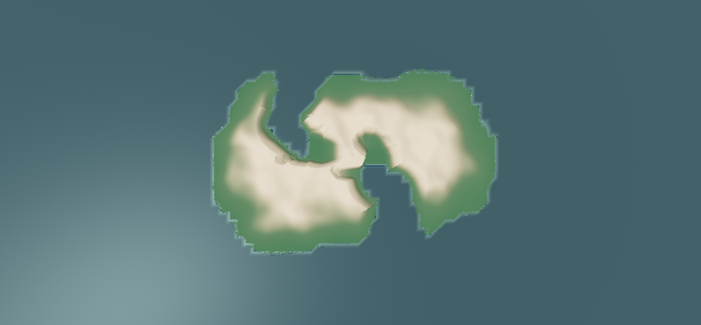
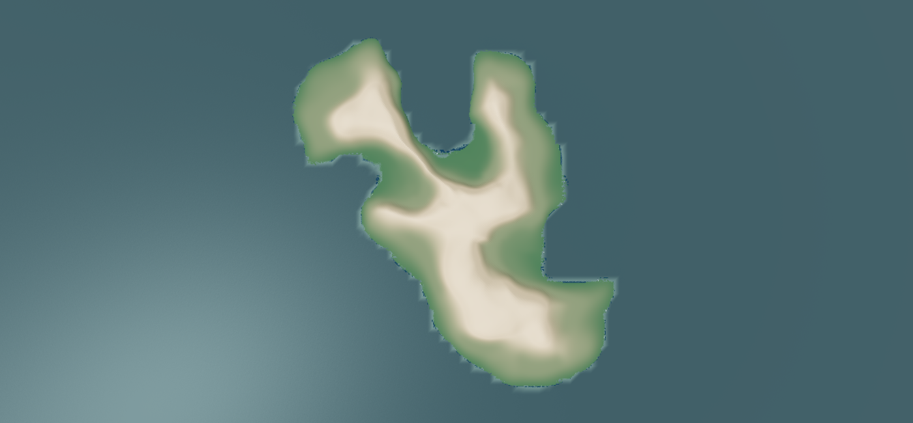
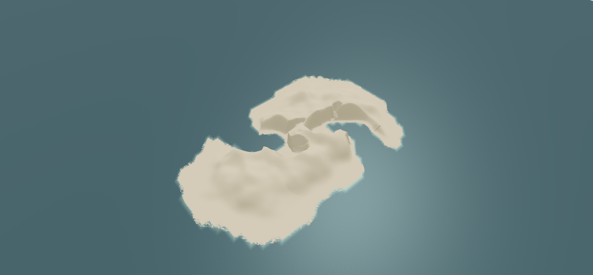
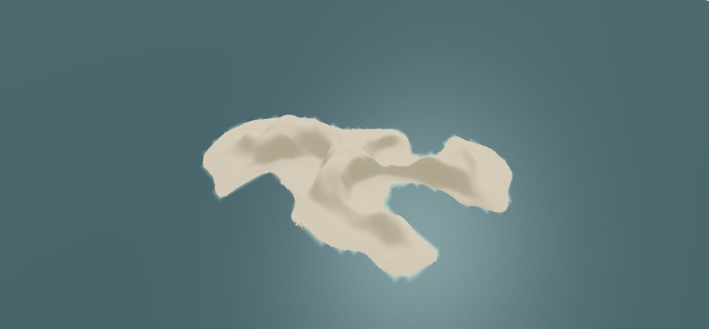
3 main valleys / 4 tributaries. Natural pockets: 4,780 and 3,608 m². Intervening ridge: 54.7m above the anchors across 69.5m. A safe terrain connection and coast approaches were verified.
A compact landmass with opposing embayments and unequal highland blocks connected through the interior.
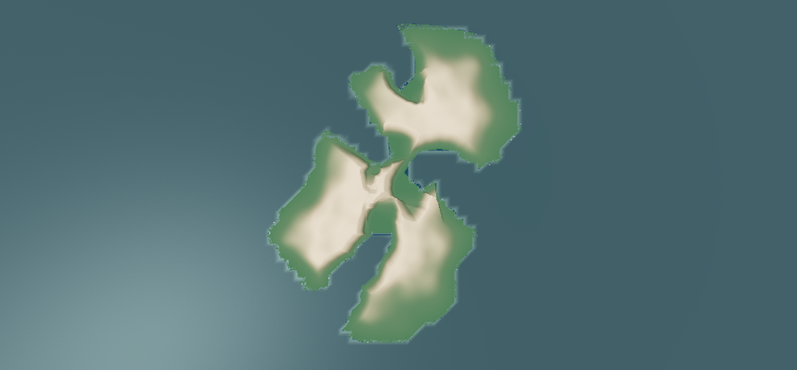
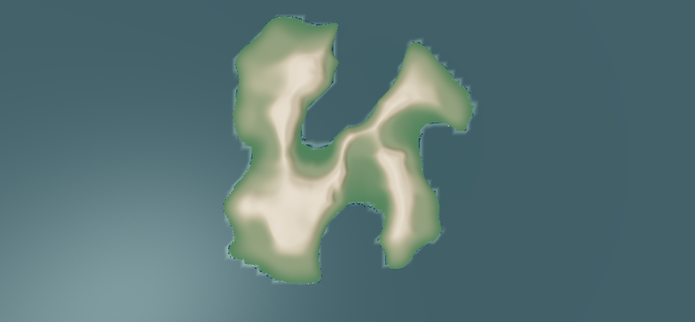
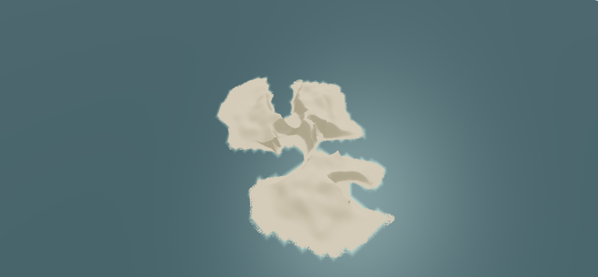
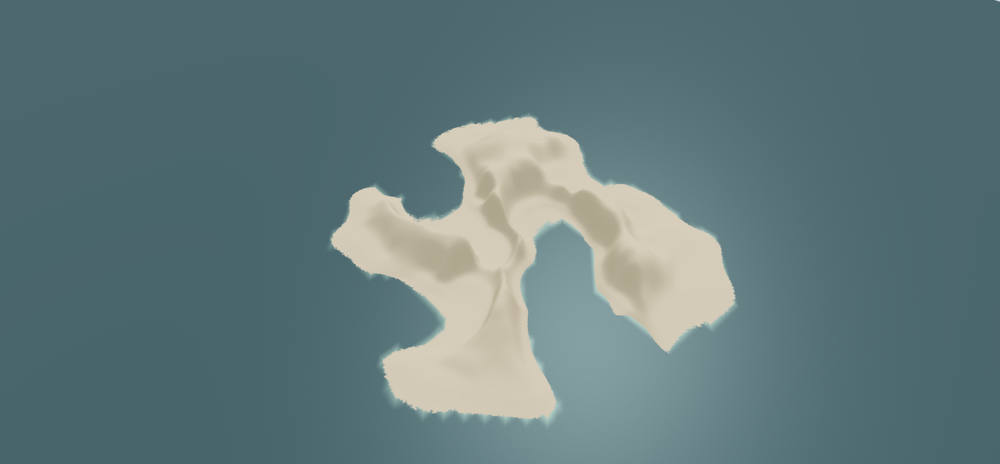
3 main valleys / 5 tributaries. Natural pockets: 5,948 and 3,172 m². Intervening ridge: 63.1m above the anchors across 53.6m. A safe terrain connection and coast approaches were verified.
An oblique main fjord separates a narrow headland from a wider, branching upland mass.
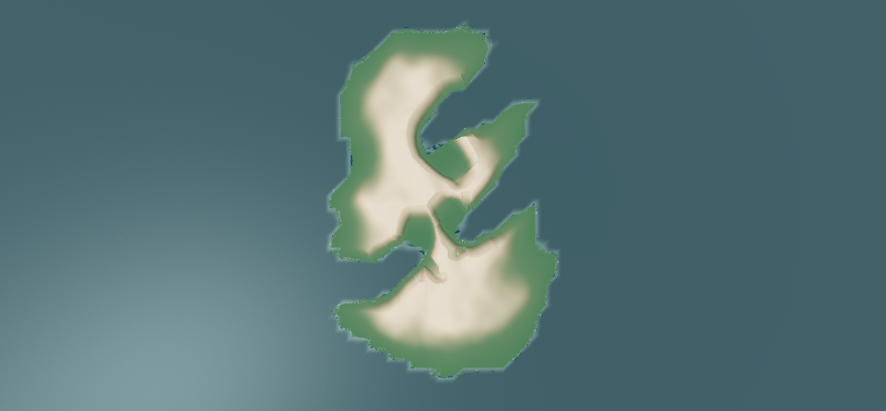
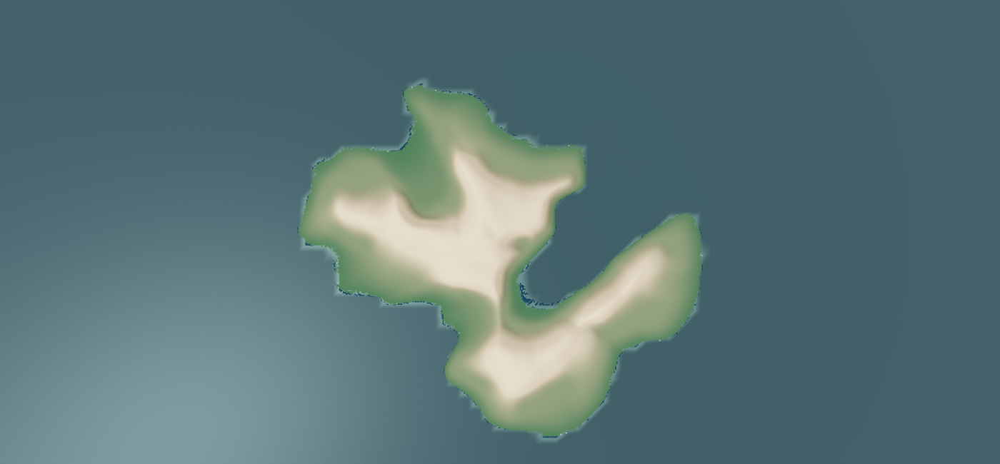
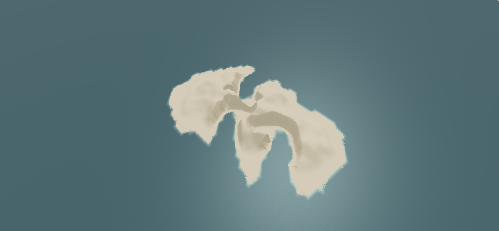
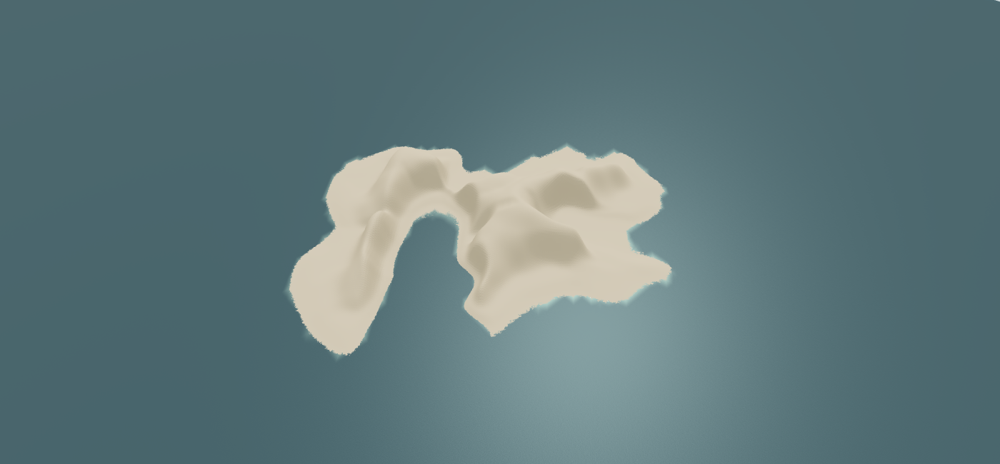
3 main valleys / 5 tributaries. Natural pockets: 5,400 and 3,016 m². Intervening ridge: 67.8m above the anchors across 97.7m. A safe terrain connection and coast approaches were verified.
A hooked western headland and a divided northern upland, with shorter secondary drowned valleys.
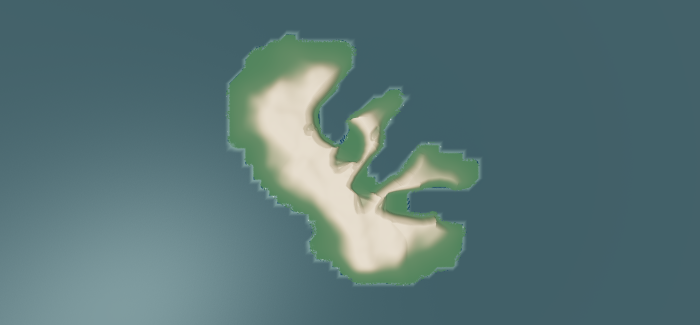
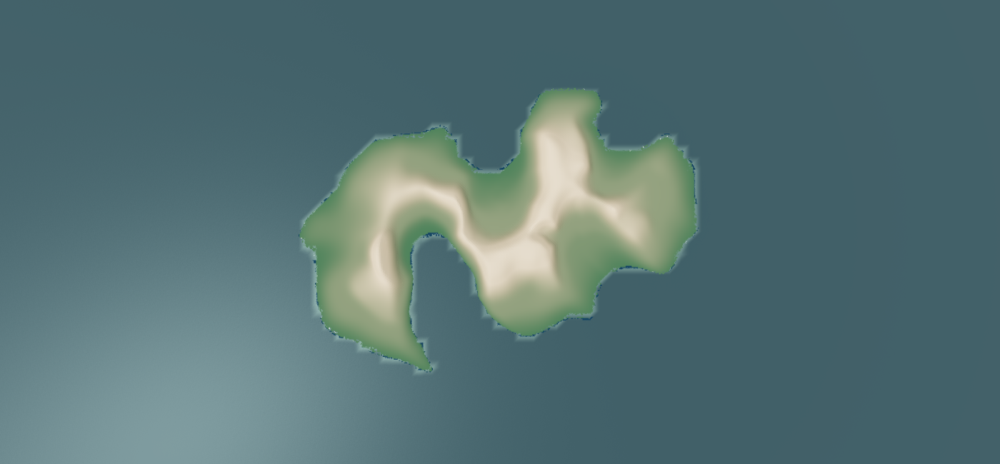
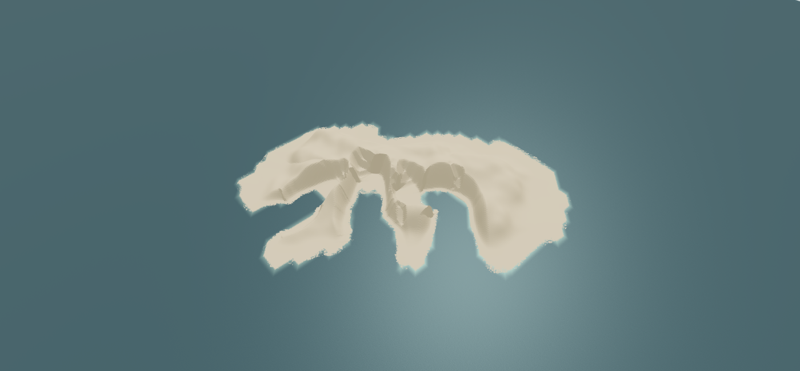
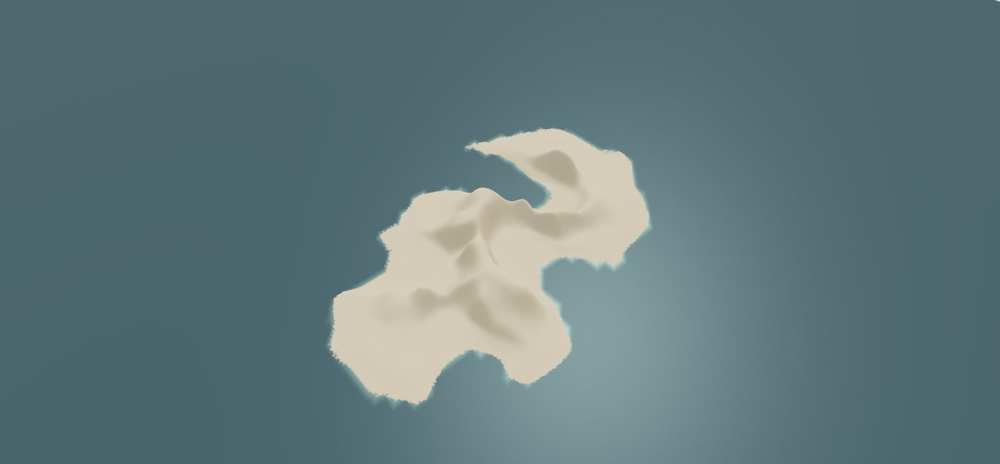
4 main valleys / 5 tributaries. Natural pockets: 6,428 and 3,932 m². Intervening ridge: 14.1m above the anchors across 23.9m. A safe terrain connection and coast approaches were verified.
A curved highland spine beside a deep western bay, broader southern shelves and shorter secondary inlets.
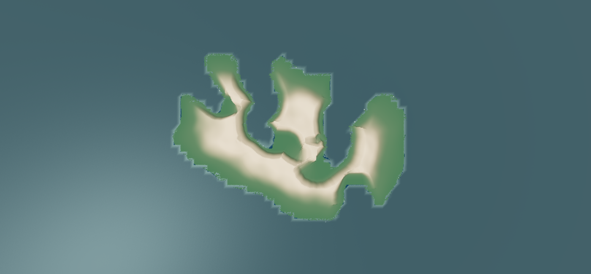
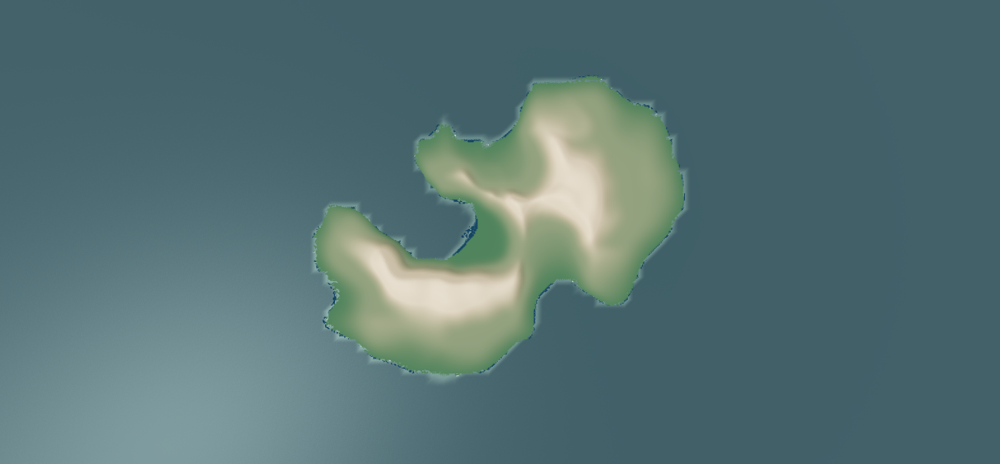
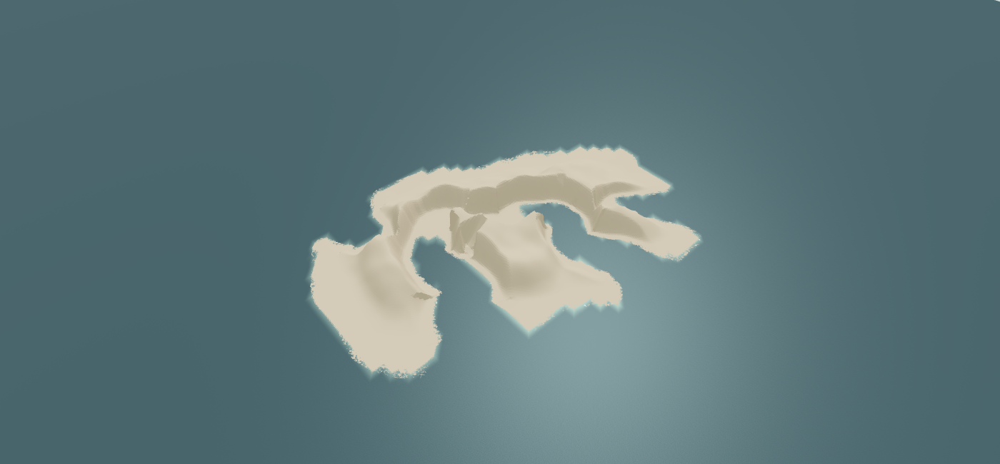
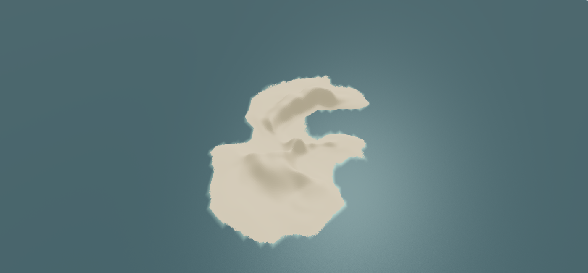
3 main valleys / 3 tributaries. Natural pockets: 7,808 and 3,280 m². Intervening ridge: 38.0m above the anchors across 43.9m. A safe terrain connection and coast approaches were verified.
The revision remains stylised. Some outer shelves and highland shoulders are broad and smooth. Metrics screen repetition and physical failures; they cannot certify geological realism. Further macro-form feedback stays in #133. Final settlement selection and line of sight remain #134.
Old saved worlds retain their exact geography. No biome zoning, new terrain renderer or physical geology simulator was added.